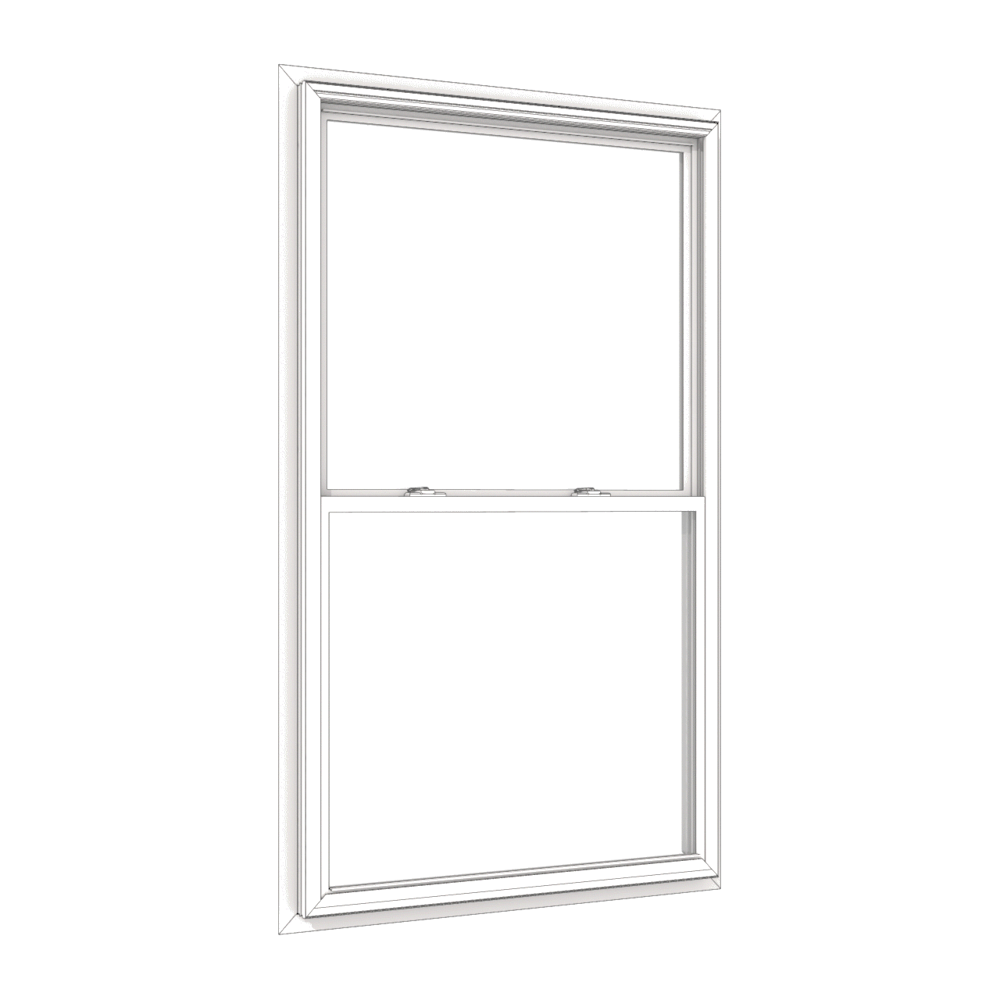

Varvara Pekhota
We live in a synthetic world. An LCD screen is full of PVC; it’s displaying an image of a toothbrush that also comes with an in-built screen. You can buy it and watch gifs before and after you’ve brushed your teeth, during that, too. This LCD is installed in a store, right next to a similar looking self-checkout touchscreen.
The experience of being outside (or inside as well, actually) your house for half an hour is an encounter with a mesh of complex networked realities. Looking at an e-ink display of a price tag updating live, you are watching an artifact of a multitude of processes within these realities – like the logic of the economical processes affecting the price of strawberries - and the fluidity of e-ink image that allows it to fluctuate - and the price of energy affected by global conflicts and trends for cloud computing – whether they’re red enough this season to sell well, etc, etc, etc, etc…
This way, you are in constant confrontation. It is impossible to take any action, even if the action is buying a box of strawberries, without leaning into engagement with mediated representations of these realities and processes. Can a closer look into the idea of interface as a framework give us a sense of direction?
The Everything Interface
Above all, the interface is inescapable. Introducing interfaciality in Soapbox Journal for cultural analysis, American scholar Devin Griffiths puts the term in the more fluid, and, refreshingly, a way more inspiring context.
“Interface” was first, quite narrowly, constructed as a term in physics that was intended to describe “the contact between dissimilar surfaces and substances”. 1 Then it became more broad, as well as operative and political, defined as the “meeting point or common ground between two parties, systems or disciplines; also, interaction, liaison, dialogue”. 2 Now the commonplace understanding of the concept is flattened into touchscreens and digital taskbars – “point of connection between an electronic device and the user”3 – but that discards a lot of possible implications of this term which could bring us to a more nuanced and possibly even liberating viewpoint.
Just like Devin Griffiths in relation to Joanna Drucker’s approach to interface theory, I feel very connected to definitions of an interface that allow things like books, bathroom faucets and apple music giftcards to be recognised as interfaces.4 This understanding of the interface almost literally de-flattens it again by bringing it (back) to the spatial domain. Joanna Drucker describes how interface as a discourse field can enable movement: the user is navigating a landscape of networked architectures that are more intricate than simple a -> b schemes. 5
Different definitions bring out various aspects of this notion. “A surface regarded as the common boundary of two bodies, spaces, or phases.” 6 is grounded in the physical, which highlights limitation as an inseparable part of the interface. “A common boundary or interconnection between systems, equipment, concepts, or human beings.” connects interface to communication, this way linking it with language.7 “The point at which two different systems, activities, etc. have an influence on each other” accentuates the power dynamics that arise as the interface shows up. 8
The essence that unites all the various definitions of interface is the acknowledgement of three different parties involved: the two agents (bodies, systems…) and that, which mediates. A closer look into the parties can reveal the underlying power structures and the specifics of the condition of each of them.
The alienated self
The position that is the most familiar to a person who is able to read this .html is most probably the user. In her book Glitch Feminism: a Manifesto American writer and curator Legacy Russel explores the way a “self” is constructed for digital natives – people, who were born into the Information Age. Importantly, she challenges the dichotomy between ‘the online’ and “the IRL”: this distinction only fetishizes the “real life” - life away from keyboard - and makes the former less substantial. Moreover, it contributes to the illusion that these are separable and are possible to detach. Quoting the art critic Gene McHugh, she states that for the young people forming as individuals online, the Internet becomes “not an esoteric corner of culture where people come to escape reality and play make-believe. It is reality”. 9
In the reality that is equally constructed of the online and AFK, a sense of self is produced on the blurred border between the body and the machine. “Glitch feminism gives weight to the selves we create through the material of the Internet” – and these selves refuse uniformity. 10 Instead, a synthetic reality allows for many identities, places, and timelines to exist simultaneously. Referring to Edouard Glissant, Russel accentuates the “consent not to be a single being” that makes selfdom a cosmic question – meaning, a self is distributed into many entities. 11
This matters, as it is one of the components that shape the condition of the user. The experience of synthetic reality is inherently fragmented, crushed into different modes and logics.
What does that mean for the immediate state of the user? How is subjectivity experienced in this state? An essential part of this condition is described by American writer and editor Rob Horning in the article “AI agents and post-consumerist subjectivity”. He calls it “a broad-based fatigue with individual agency, with the vagaries of being recognised as subject” – a self in a consumerist society would be expected to exist through performative active consumption and, according to Horning, we have arrived to a post-consumerist point where even this expectation to perform is exhausting. 12 Now we are expected to dream of relief from it.
If we look closer at the imaginary worlds depicted in ads from companies like Salesforce and Apple, it is clear that their preferred state for a human to be is “a zoned-out semi-presence, the worker accounted for in body but absent in spirit”. It is an attractive remedy for the fatigue: in a world of closed systems where each movement is predicted and pre-calculated, you might as well be able to withdraw yourself completely: “Ads for technology now offer a transition from conspicuous consumption toward conspicuous compliance under the guise of greater convenience”. 13 Quoting Kate Crawford, Horning states: “Convenience is the site of our deepest alienation” – and indeed alienation, separation and indifference are the key factors of the interfaced self. 14
The alienating infrastructures
When we come to the conclusion that the mediated self is an alienated self, we need a closer look into that which makes it mediated, as well as the specific mechanisms that make it work. In his well-known work The Interface Effect American author and professor in media and culture Alexander Galloway outlines what interface actually means as a political and technical system that facilitates power dynamics. Importantly, while the interface has an optic dimension, it is primarily a logic. Control within the interface is performed not through forceful action but through inconspicuous mechanisms of restriction and encouragement which often make the power dynamic close to invisible.
Practically, on a visual level, a conventionally “well-done” interface strives to be unnoticeable as well; even in the case of open-source materials, which are meant to be as transparent for the user as possible, the transparency is illusory. In that case, they only open the visual experience of the interface but not the system itself – and in any case, this interface invisibility leads to an implication that any information or experience that is delivered by the interface is expected to be a clear unmediated truth. 15
According to Alexander Galloway, an intrinsic component of any interface is limitation, which is also pointed out by the Los-Angeles based writer, web designer and media artist Maisa Imamovic In her book Maisa in Webland. The same way as Galloway points out the interface as a means to structure meaning, she highlights the fact that any software is based on linguistic limitations and rules. 16 The syntaxis of a language is inherently restricting but that is what eventually makes it possible for speech to be understandable – a sentence in English needs an appropriate word order and the right grammatical coordination for each word class to be comprehended – an interface as intermediary consists of restrictive but potentially functional components.
This is, again, not entirely bad, as this notion potentially also opens up a liberating aspect of syntax. For example, in the context of oral speech Noam Chomsky talks about derivations within understandable communication that actually create new possibilities for language to transform. 17 These are newly formed relationships within sentences that enable the new rules to appear, or the old ones to change, which makes it possible to find freedom within the language while still operating inside the logic of grammar and syntax.
This means that derivation within the grammar of the interface has a great freeing potential. The user always has an opportunity to shift the focus from automatized perception towards the logic of the interface itself – and even the most blunt attempt to use this opportunity is empowering.
Importantly, a lot of art functions as this kind of derivation within the understandable, which, in this logic, becomes a more substantial step than just a gesture. A statement that is able to successfully question the generally accepted or invisible norm in interface broadens the spectrum of what is possible. If something is different but we’re still able to understand it, doesn’t it mean it works?
One of the artworks that performs this well is a classic web-based artwork by the pioneer net artist Olia Lialina called “Summer” (2013). 18 In this work, we see a gif of a woman, the artist herself, swinging on a swing. Unless you watch it in fullscreen, the swing looks like it’s fixed directly to the top panel of your browser. The gif is not very comfortable to watch because every other frame is blinking black like a strobe light, and the search bar is switching contents ~3 times per second. It is this way because this gif is in fact composed of separate frames. Each one of the frames is displayed on a separate page that is hosted on a personal website of one of the artists who agreed to participate. The mechanism that actually makes the gif run is one of the basic web functions of redirection. This way, the specific way the artwork appears to the user is not fixed, like it would be in case of a regular gif, but is dependent on many different factors, like the network connectivity of the user’s particular device at the particular place and time, whether all the websites that are participating are still able to host the image, and, again, whether the user has chosen fullscreen mode.
It is a good example of how the syntax of an interface can be misused to expand the possible. Lialina uses one of the most essential, most commonly seen mechanisms of the Internet, which is embedded into almost any interaction with the web, and puts it into the forefront of the work. There is an element of wonder to this which makes it apparent that the processes of redirecting and loading themselves are supposed to be invisible – it’s the results you are supposed to pay attention to. Every updated page comes with a flicker, and your server response time is different every exact moment, making the gif physical like a roll of film – an essential notion that only comes to the surface through an active act of misuse.
It is important that this artwork is so strong as a derivation in the Chomsky sense because it is a perfectly understandable statement. We can very well understand the syntax of a gif and base on it our expectation of what we are going to see, but it is the combination of it with the syntax of a webpage that allows for transformation. The inner logic of the work making this possible is what is empowering here.
Edgy American art collective MSCHF plays with a similar dialectic in a more “out there” way. Many of their projects are embedded into the contemporary consumerist culture: they obey the syntax of capitalism (such as, by successfully generating hype or functioning as a commercially successful business) while at the same time being to various extent disruptive to that very syntax. For example their 2020 project “ALEXAGATE” is a physical add-on to the Amazon home assistant device Echo. 19 It is supposed to be attached to the Echo, after which it jams the microphone of the home assistant by sending ultrasound pulses: “x means Bezos can’t eavesdrop”. 20 On the one hand, the object on itself carries quite a straightforward message, accompanied by a manifesto on the product webshop page: the physicality of the consumer objects represented by Echo, is an area of potential resistance. This on its own is quite a strong point which is embodied by the gadget. However, a more interesting edge of the project is the fact that it so strictly takes the form of a commodity, another sellable item, which is constituted in a sleek design, clean Teenage Engineering’esque webpage, and a 99 dollar price tag. What does it mean to live in a world where you are expected to buy commodities to free yourself?
Through this kind of serious positioning oneself within logic (syntax, grammar?) of the system it becomes possible to make a convincing statement. An apparent subversion in a case like that is deeply grounded in the context, which makes it way more immediate and palpable than any theoretical commentary. That’s simply more interesting, too: the fact that Alexagate is sold out indicates that a product like that is actually in demand, which only makes the artwork stronger.
what does this mean?
As a growing proportion of any experience that we get can be characterized as an interfaced experience, we are becoming more and more habituated to living with the medium. It is accurate on several accounts. In the most commonplace sense that takes shape in the form of digital infrastructures that are permeating all possible spheres of life, be it your eight hours of phone screen time or a payment terminal that blocks your access to a toilet at the train station. In an extended sense, it includes any window, a Kinder Bueno package, or a roll of tape, which then become operational devices in complex systems of interaction.
This puts us as users, in a position where a clash of interests is unavoidable – or, to put it more simply, these systems do not need to work for the benefit of the user, really. The basic principle of a conventionally “good” interface is invisibility, while at the same time we know, according to Alexander Galloway, that an interface is never neutral. It may seem like a purely functional structure, but it always is a vessel for mobilization of power. 21 These two aspects in combination create a system where the often oppressive power dynamics are actualized ambiently through mechanisms that are hidden so well that the user would not even be able to notice them. Why is Tony’s chocolate shaped so weird?
Or maybe the user wouldn’t want to notice them. Living within the interfaced realities is a constant expectation to decide, be seen, act, and consume. Our sense of self is splintered into many parts that we need to sustain in order to feel anything. It’s exhausting. At the same time, anything beyond the precalculated is discouraged, it’s inconvenient. This makes apathy and fatigue, as described by Rob Horning, the default expected state of the user, and any attempt to go beyond that becomes an active effort.
This is an effort that should be appreciated and cherished. The ability to misuse tools and systems in a way that is truly subversive is as rare as it is essential, as it is a possibility to reclaim fleeting agency. A more in-depth look into the interfaces we face as ongoing dynamic relationships can create a strong base for that. We can explore the limitations that are inherent to those and use the knowledge to establish new meaningful ways to exist with those – or bring change. Mark Fisher ends his crucial work Capitalist Realism: Is There No Alternative? with the words: “even glimmers of alternative political and economic possibilities can have a disproportionately great effect. <...> From a situation in which nothing can happen, suddenly anything is possible again.”22 Isn’t this prospect astonishing?
Bibliography:
Bridle, James. “Interrogating the Network: James Bridle and the New Aesthetic.” Culture Machine 14 (2013): 1–20. https://www.academia.edu/5015753/.
Drucker, Joanna. “Humanities Approaches to Interface Theory.” Culture Machine 12 (2011): 1–20.
Felstead, Daniel. “The Metaverse in Janky Capitalism.” DIS, n.d. https://dis.art/the-metaverse-in-janky-capitalism.
Fisher, Mark. Capitalist Realism: Is There No Alternative? Winchester: Zero Books, 2009.
Galloway, Alexander R. The Interface Effect. Cambridge, UK: Polity, 2012.
Horning, Rob. “AI Agents and Post-consumerist Subjectivity.” In Vectoral Agents: Power in the Age of Planetary Computation, edited by Jernej Markelj and Claudio Celis Bueno. Amsterdam: Institute of Network Cultures, 2025. https://networkcultures.org/blog/publication/vectoral-agents-power-in-the-age-of-planetary-computation
Imamović, Maisa. Maisa in Webland: Detouring UX Destinies. Set Margins’ publications, 2026.
Markelj, Jernej, and Claudio Celis Bueno. “Machinic Subjects: On the Political Technology of (In)dividuality.” In Vectoral Agents: Power in the Age of Planetary Computation, edited by Jernej Markelj and Claudio Celis Bueno, 1–12. Amsterdam: Institute of Network Cultures, 2025. https://networkcultures.org/blog/publication/vectoral-agents-power-in-the-age-of-planetary-computation/.
McCallum, Brendan. “Interrogating the Network: James Bridle and the New Aesthetic.” Selected Papers of the Association of Internet Researchers (AoIR) (2025). https://spir.aoir.org/ojs/index.php/spir/article/view/13532
Robert Pfaller, Interpassivity: The Aesthetics of Delegated Enjoyment, ed. (Edinburgh: Edinburgh University Press, 2017; online edition, Edinburgh Scholarship Online, 18 Jan. 2018), DOI:10.3366/edinburgh/9781474422925.001.0001.
Russell, Legacy. Glitch Feminism: A Manifesto. London: Verso, 2020.
Soapbox Journal for Cultural Analysis. 4.0 At the Interface. Amsterdam: Soapbox Journal, 2023. https://www.soapboxjournal.net/print-editions/4-0-at-the-interface.
Tuters, Marc, and Boris Noordenbos. “Ambient Propaganda: Tuning-in to WarTok During Russia’s Invasion of Ukraine.” Selected Papers of the Association of Internet Researchers (AoIR) (2025). https://spir.aoir.org/ojs/index.php/spir/article/view/13532.
Wendy Hui Kyong Chun, Programmed Visions: Software and Memory (Cambridge, MA: MIT Press, 2011)
Devin Griffiths, “Introduction: Interfaciality,” in Soapbox: Journal for Cultural Analysis, no. 4.0, At the Interface (2023), 18.↩︎
Ibid.↩︎
Cambridge Dictionary, s.v. “interface,” accessed April 27, 2026, https://dictionary.cambridge.org/dictionary/english/interface↩︎
Drucker, Joanna. “Humanities Approaches to Interface Theory.” Culture Machine, vol. 12, 2011, pp. 1-20.↩︎
Ibid.↩︎
Ibid.↩︎
Ibid.↩︎
Ibid.↩︎
Legacy Russell, Glitch Feminism: A Manifesto (London: Verso, 2020), 42.↩︎
Ibid., 42.↩︎
Ibid., 88.↩︎
Rob Horning, “AI Agents and Post-consumerist Subjectivity,” in Vectoral Agents: Power in the Age of Planetary Computation, ed. Jernej Markelj and Claudio Celis Bueno (Amsterdam: Institute of Network Cultures, 2025), 15, https://networkcultures.org/blog/publication/vectoral-agents-power-in-the-age-of-planetary-computation.↩︎
Ibid., 17.↩︎
Ibid., 19.↩︎
Maisa Imamović, Maisa in Webland: Detouring UX Destinies (Set Margins’ Publications, 2026), 34.↩︎
Ibid., 58.↩︎
Ibid., 64.↩︎
Olia Lialina, Summer, 2013, net artwork, https://art.teleportacia.org/olia/summer/.↩︎
MSCHF, Alexagate, 2023, web-based artwork, https://alexagate.com/↩︎
Ibid.↩︎
Alexander R. Galloway, The Interface Effect (Cambridge: Polity, 2012), 18.↩︎
Mark Fisher, Capitalist Realism: Is There No Alternative? (Winchester, UK: Zero Books, 2009), 81.↩︎